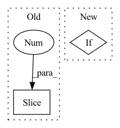

Pattern ID :1534

Before Change
// Convblocks
self.models.append(
nn.Sequential(
*layer_list[:4]
)
)
// FC
After Change
spatial = 1
input_channel = 64
out_channel = input_channel // (compress_ratio // 4)
elif split == "middle":
spatial = 1
input_channel = 256
out_channel = input_channel // (compress_ratio // 4)
elif split == "linear":
In pattern: SUPERPATTERN
Frequency: 3
Non-data size: 2
Instances
Fragment ID: 4052925
Project Name: wesleyhsieh0806/c3-sl
Commit Name: f86fb7a63a6de4dd7f7b9620adea791e892b57d1
Time: 2021-09-13
Author: b06901053@ntu.edu.tw
File Name: CIFAR10/BottleNet++/model.py
Class Name: SplitResNet50
Method Name: __init__
Parent Class: nn.Module
Fragment ID: 4052927
Project Name: vincentstimper/normalizing-flows
Commit Name: 9b3bde1f7c9a554b1e571364958858385423209b
Time: 2020-10-19
Author: vincent.stimper@gmail.com
File Name: normflow/nets.py
Class Name: ConvNet2d
Method Name: __init__
Parent Class: nn.Module
Fragment ID: 4052923
Project Name: lorenmt/shape-adaptor
Commit Name: 080b6fdad63f71e54ed0fdaa379c604463d0bcb7
Time: 2020-07-31
Author: sk.lorenmt@gmail.com
File Name: model_list.py
Class Name: VGG
Method Name: __init__
Parent Class: nn.Module